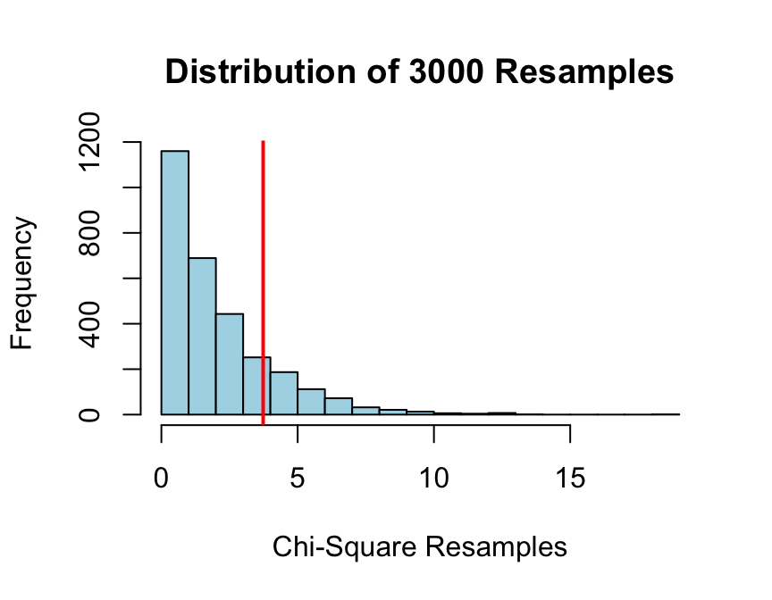

Five Reasons to Teach Elementary Statistics With R: Part 2
Introduction
This is is second in a projected five-part series of posts aimed at colleagues who teach elementary statistics. If you teach with R but hesitate to spring such a powerful and complex tool on unsuspecting introductory students—many of whom whom will have had no prior experience with the command line, much less with coding—then I hope these posts will give you some encouragement.
The first post in this series introduced package mosaic, and promised to review a supplementary package that I and a colleague put together for our own students, but I’ve decided put that off a bit and focus instead on another powerful new tool for statistics instruction: the well-known RStudio Integrated Development Environment for R, and its manipulate package in particular.
Reason #2: RStudio’s manipulate
You might think that an IDE is strictly for programmers. The authors of mosaic, though, looked at RStudio and saw an environment ripe for customization to fit the elementary classroom. RStudio offers many benefits in this regard, but for this post I’ll concentrate on just one: its pre-installed package manipulate.
The RStudio developers may have written manipulate simply as a prototype for Shiny, but it happens to be a fabulous tool for authoring instructional applets. To be sure, there are many great instructional apps out on the web—visual stunners put together by authentic web developers—but the everyday statistics instructor may find that manipulate empowers her to quickly work up small instructional apps that address needs specific to her own students.
At my College, for example, we believe that simulation is important to understanding probability concepts, but we also find that our students don’t easily grasp the import of a simulation when the computers simply generates, say, 3000 re-samples and summarizes the results, all in flash. We feel the need for plenty of “one at a time” simulation experiences that serve as transitions to the analysis of large-scale simulation results, and we don’t always find apps on the web that cater to our needs in just the way we would like.
Suppose you want students to understand coverage properties of confidence intervals—i.e., what we really mean when we say that we are “95%-confident” that the interval covers the population parameter–in a ground-up way. Then you might do as my colleague Rebekah Robinson did, and write a manipulate app like CIMean().
To get the app, install package tigerstats from CRAN, or for the very latest version try:
require(devtools)
install_github(repo="homerhanumat/tigerstats")Next, get into RStudio (if you are not there already), and run:
require(tigerstats)
require(manipulate)
CIMean(~height,data=imagpop)The app loads in the (roughly normally distributed) heights of an imaginary population of 10,000 people. Sliders allow the user to select a sample size and a desired confidence level. Click on one of the sliders and you’ll get just one sample from the population, with a histogram of the sample overlaying the density curve for the population, and a confidence interval displayed clearly along the horizontal axis. The user can easily see whether the interval contains the population mean (marked by the red vertical line). Output to the console also keeps the user apprised of what has just happened. When the user has clicked enough to get the idea, he/she can ask for a lot of samples at once, verifying that when assumptions are met 95%-confidence intervals do indeed cover their target parameter about 95% of the time.
One advantage of manipulate apps over the visually spectacular ones you find on the web is that you can easily write them to accept arbitrary input. CIMean(), for example, will deal with any numerical variable from any data frame on R’s search path,including the quite right-skewed variable income fromimagpop:
CIMean(~income,data=imagpop)The user realizes quickly that the standard t-intervals applied to small samples from skewed populations do not possess the advertised coverage properties.
Once you get into the spirit of manipulate you may find yourself writing apps that work in a similar vein without requiring the elements of the package itself. For example ChisqSimSlow(), which does not require manipulate (and in fact runs outside of RStudio) takes arbitrary data and applies a one-at-a-time re-sampling routine to slowly build up the Null Distribution of the chi-square statistic, in a situation where one is testing whether two factor variables are associated.
For example, suppose we are looking at survey in which a random sample of students were asked for their sex and for their seating preference in a classroom:
SexSeat <- xtabs(~sex+seat,data=m111survey)
SexSeat## seat
## sex 1_front 2_middle 3_back
## female 19 16 5
## male 8 16 7Let’s check this out with some row percentages:
rowPerc(SexSeat)## seat
## sex 1_front 2_middle 3_back Total
## female 47.50 40.00 12.50 100.00
## male 25.81 51.61 22.58 100.00Hmm, the women in the sample seem much more likely than the guys to prefer the Front! Does this data provide convincing evidence for a relationship between sex and seat in the College population at large? To investigate this, a student might try:
ChisqSimSlow(~sex+seat,data=m111survey)Keep asking for a re-sample, and after a while you get the sense that the observed value of the chi-square statistic is not an unusually large value, if sex and seat are, all along, unrelated in the population.
Once students understand the import of simulation they can employ it to advantage on a large scale. In the tigerstats version of the chisq.test(), the student might ask for:
set.seed(2014)
chisqtestGC(~sex+seat,data=m111survey,
simulate.p.value="random",
B=3000,
graph=TRUE)## Pearson's chi-squared test with simulated p-value, marginal sums not fixed
## (based on 3000 resamples)
##
## Observed Counts:
## seat
## sex 1_front 2_middle 3_back
## female 19 16 5
## male 8 16 7
##
## Counts Expected by Null:
## seat
## sex 1_front 2_middle 3_back
## female 15.21 18.03 6.76
## male 11.79 13.97 5.24
##
## Contributions to the chi-square statistic:
## seat
## sex 1_front 2_middle 3_back
## female 0.94 0.23 0.46
## male 1.22 0.29 0.59
##
##
## Chi-Square Statistic = 3.734
## Degrees of Freedom of the table = 2
## P-Value = 0.1729
Do It Yourself
I do not discuss the above apps with the expectation that colleagues at other institution will adopt them. On the contrary, my point is merely that the folks at RStudio have provided R-users with a tool that enables ordinary instructors like us to write our own apps. If you like a particular app, them check out the source code (tigerstats, for example is on GitHub), clean it up a bit maybe, and use it as a basis for an app tailored to your particular tastes and the needs of your particular students.
Better yet, persuade an upper-level student to write the app for you as a programming project: manipulate’s greatest use may prove to be as a gateway-drug to coding!
Next Time
In the next post, maybe we’ll have a look at what R Studio’s shiny can do for an elementary class.